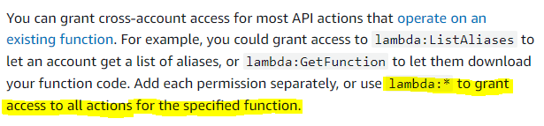

AWS Lambda
AWS Lambda functions can be configured to run up to 15 minutes per execution. You can set the timeout to any value between 1 second and 15 minutes.
AWS Lambda currently supports 1000 concurrent executions per AWS account per region. You need to contact AWS support to raise the account limit.
With AWS Lambda, you can run code without provisioning or managing servers. You pay only for the compute time that you consume—there’s no charge when your code isn’t running. You can run code for virtually any type of application or backend service—all with zero administration.
AWS Lambda can be combined with DynamoDB to process and capture the key-value data from the IoT sources
Lambda functions always operate from an AWS-owned VPC. By default, your function has the full ability to make network requests to any public internet address — this includes access to any of the public AWS APIs. For example, your function can interact with AWS DynamoDB APIs to PutItem or Query for records. You should only enable your functions for VPC access when you need to interact with a private resource located in a private subnet. An RDS instance is a good example. Once your function is VPC-enabled, all network traffic from your function is subject to the routing rules of your VPC/Subnet. If your function needs to interact with a public resource, you will need a route through a NAT gateway in a public subnet.
Lambda functions can scale extremely quickly, this means you should have controls in place to notify you when you have a spike in concurrency. A good idea is to deploy a CloudWatch Alarm that notifies your team when function metrics such as ConcurrentExecutions or Invocations exceeds your threshold. You should create an AWS Budget so you can monitor costs on a daily basis.
Lambda Layers
A layer is a ZIP archive that contains libraries, a custom runtime, or other dependencies. With layers, you can use libraries in your function without needing to include them in your deployment package. Layers let you keep your deployment package small, which makes development easier. A function can use up to 5 layers at a time. You can create layers, or use layers published by AWS and other AWS customers. Layers support resource-based policies for granting layer usage permissions to specific AWS accounts, AWS Organizations, or all accounts. The total unzipped size of the function and all layers can't exceed the unzipped deployment package size limit of 250 MB.
